| 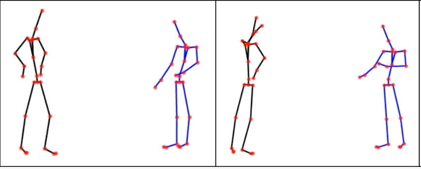 |
Agree or Disagree? Generating Body Gestures from Affective Contextual Cues during Dyadic Interactions. Nguyen Tan Viet Tuyen, and Oya Celiktutan 31st IEEE International Conference on Robot and Human Interactive Communication (RO-MAN'22) [Paper] |
|---|---|
| 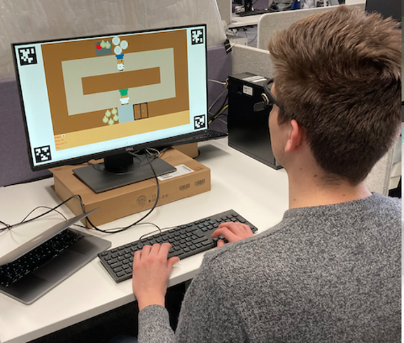 |
Analysing eye gaze patterns during confusion and errors in human–agent collaborations Lennart Wachowiak, Peter Tisnikar, Gerard Canal, Andrew Coles, Matteo Leonetti, and Oya Celiktutan 31st IEEE International Conference on Robot and Human Interactive Communication (RO-MAN'22) [Paper] |
| 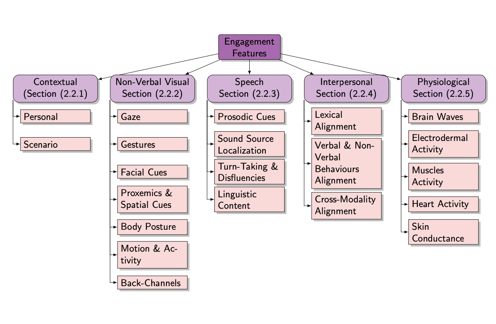 |
Automatic Context-Driven Inference of Engagement in HMI: A Survey Hanan Salam, Oya Celiktutan, Hatice Gunes, and Mohamed Chetouani [Paper] |
| 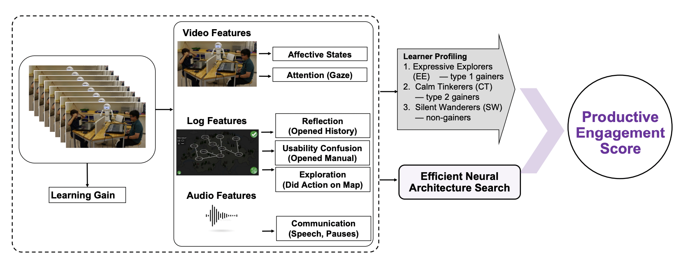 |
Personalized Productive Engagement Recognition in Robot-Mediated Collaborative Learning Vetha Vikashini, Hanan Salam, Jauwairia Nasir, Barbara Bruno, and Oya Celiktutan 24th ACM International Conference on Multimodal Interaction (ICMI'22) [Paper] |
| 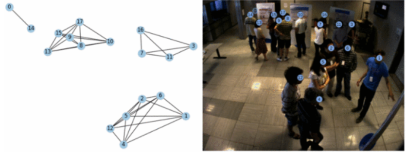 |
GROWL: Group Detection With Link Prediction Viktor Schmuck, and Oya Celiktutan 16th IEEE International Conference on Automatic Face and Gesture Recognition (FG'21) [Paper] |
| 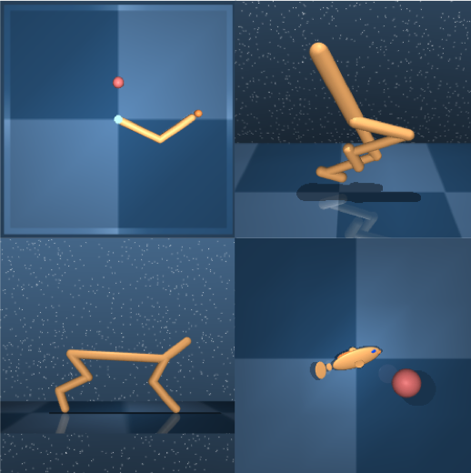 |
Learning Routines for Effective Off-policy Reinforcement Learning Edoardo Cetin, and Oya Celiktutan International Conference on Machine Learning 2021 (ICML'21) [Project page] |
| 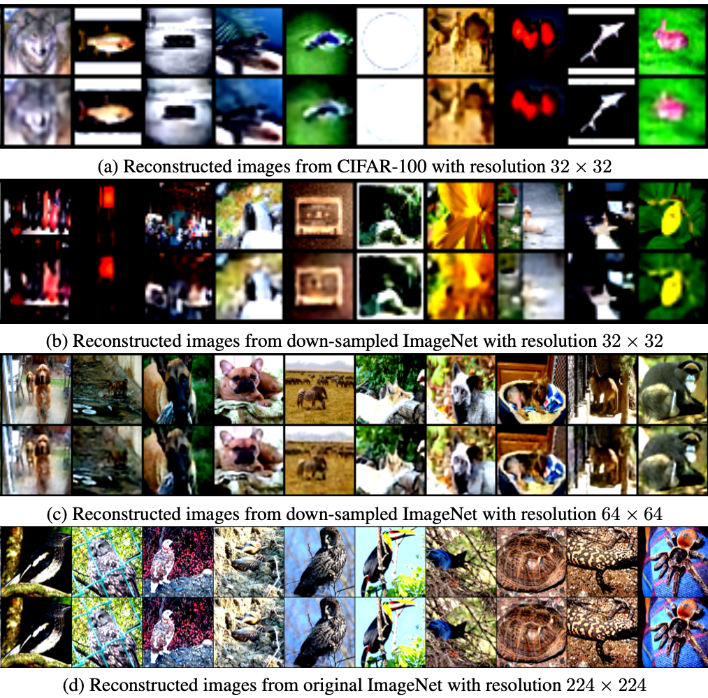 |
IB-DRR: Incremental Learning with Information-Back Discrete Representation Replay Jian Jiang, Edoardo Cetin, and Oya Celiktutan CVPR Workshop on Continual Learning 2021 (CLVision'21) [Paper] |
| 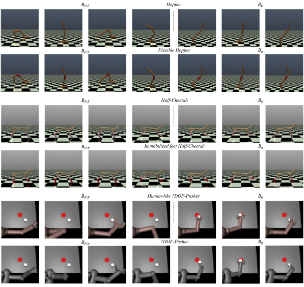 |
Domain-Robust Visual Imitation Learning with Mutual Information Constraints Edoardo Cetin, and Oya Celiktutan International Conference on Learning Representations 2021 (ICLR'21) [Project page] |
| 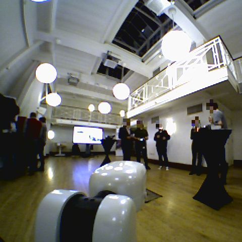 |
Robocentric Conversational Group Discovery Viktor Schmuck, Tingran Sheng, and Oya Celiktutan IEEE International Conference on Robot & Human Interactive Communication 2020 (RO-MAN'20) [Project page] |
| 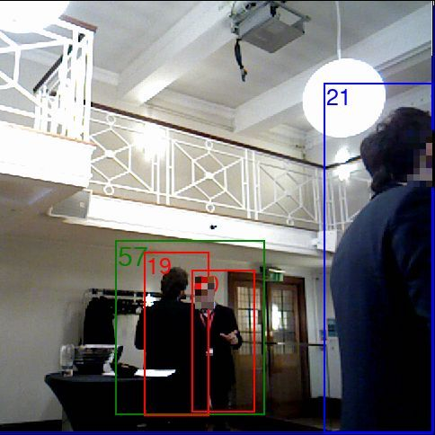 |
RICA: Robocentric Indoor Crowd Analysis Dataset Viktor Schmuck, and Oya Celiktutan UKRAS20 Conference: “Robots into the real world” Proceedings, 2020 [Project page] |
| 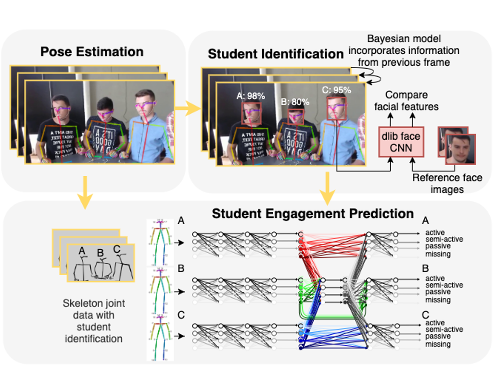 |
Inferring Student Engagement in Collaborative Problem Solving from Visual Cues Angelika Kasparova, Oya Celiktutan, and Mutlu Cukurova International Conference on Multimodal Interaction Workshops 2020 (ICMI'20 Companion) [Project page] |